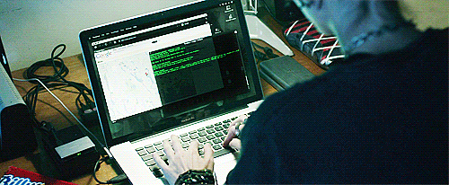
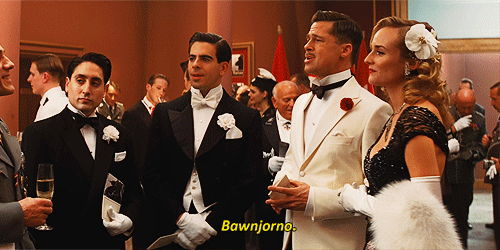

1. Porque soy fan del Internet
Incluyendo mi amor por las Redes Sociales, los gifs, los #hashtags, los emojis y obviamente, BuzzFeed
Millenial de corazón
Incluyendo mi amor por las Redes Sociales, los gifs, los #hashtags, los emojis y obviamente, BuzzFeed
¡Siempre estoy actualizada! ;)
Tengo dos años de experiencia en el mundo del Content y Community Management con marcas como Alcatel, Samsonite, Reebok y Mundo Rosa
He manejado Photoshop, Illustrator e Indesign y tengo conocimientos avanzados en Wordpress
También sé francés y domino el idioma de la efe ;)
Dicen que las calificaciones no importan, pero se vale presumir
Soy constante y me gustan los retos